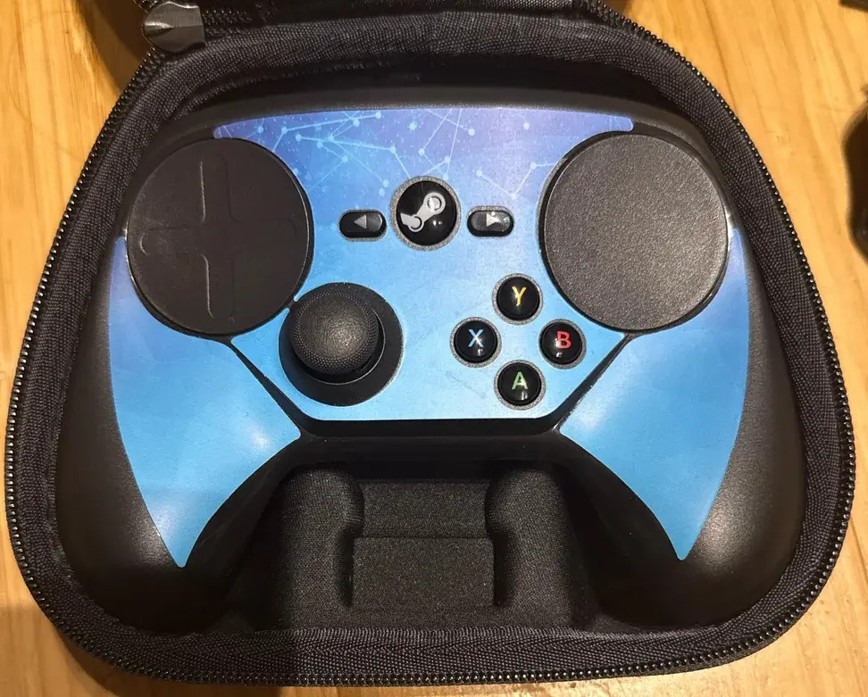
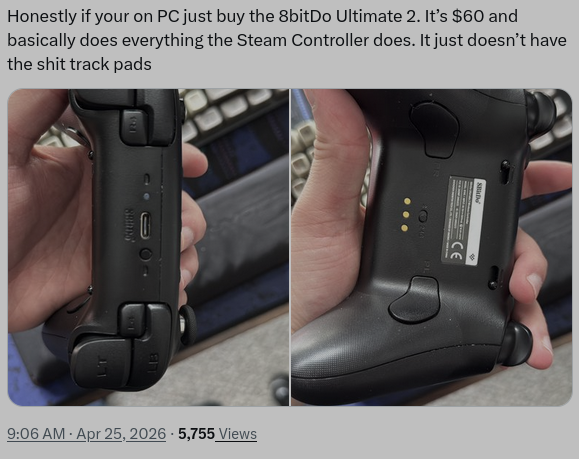
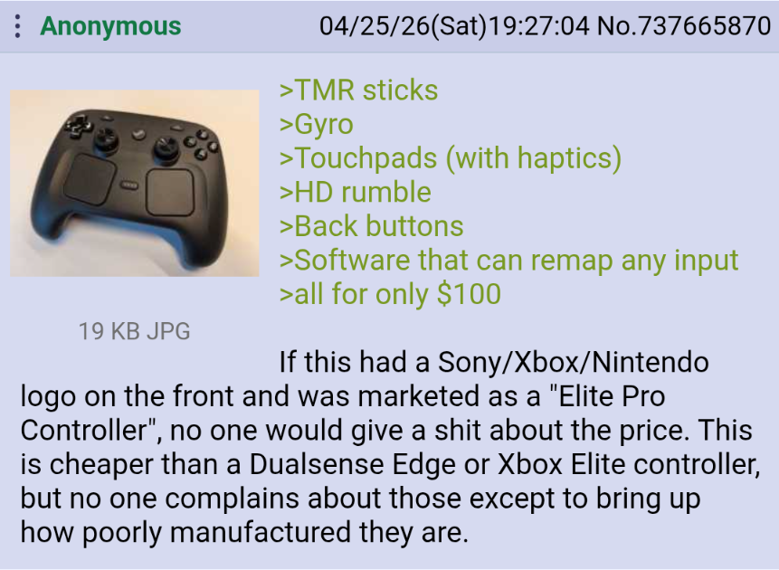

When I saw this trailer, I was so excited for this controller to come out and to use it. Valve, I believe, will hit the nail on the head with this. But he's not the main character on this page.
Recently (about two months ago from when I'm writing this) I bought an original 2015 Steam Controller, three months after the new controller was announced with the Steam Frame and Steam Machine.
Steam Controller 2nd Gen - Wikipedia
Why would I bother buying an 11-year-old controller? I came across this Bringus Studio video about the prototypes about a year ago and I'd wanted one ever since.
I also wanted to grab a piece of Valve gaming history before it shoots up to $400+ thanks to the new one coming out soon.
Steam Controller 1st Gen - Wikipedia
Back in 2015, Steam saw a problem gamers had which was not being the most oppressed group, it was all about sacrifice. Do you get a console and pay for an online subscription, but enjoy the convenience of accessibility and bond with other people? Or do you get the more expensive PC setup with a tower, mouse, keyboard, and monitor, and the Steam environment/store that has more games but isn't exactly "couch-friendly"?
Then there was the mouse vs. controller debate. Were console players getting it easy with aim assist, or was aim assist needed to balance the mouse's "perfect precision"?
Steam tried to solve this with the original Steam Controller (1st Gen), the "best of both worlds". It gives you options for how you play and how you customize, like keybind wise, have a game you want to play and don't want to bind every button just download one from the workshop.
But for customization color-wise, unless you went to the Steam Dev event and got the limited edition one.

When I was going to finally update my site with this "article", Steam just released all the CAD files for the shell and puck, so the right to repair exists AND YOU CAN MAKE IT TO WHATEVER YOU WANT.
GitLab link - actual CAD files
Amazing play by Valve.
Now you could play your Steam library from the couch with a familiar controller shape, roughly modeled after an Xbox 360 controller, and even get some friends together for couch co-op.
The trackpad idea is genuinely great in concept, like a mousepad, a ThinkPad nipple, or a SpaceMouse. It would never drift and could theoretically offer "mouse-like" ability.
But since it replaced a joystick it wasn't the most appealing. Especially for players used to low sensitivity. Trust me, when playing BO3 I needed to raise it up so I can make a good 360 turn instead of rubbing it constantly.
behind the scenes of steam controller
If you haven't felt the pad, it's not rubbery and it's not an iPod scroll wheel (granted would be cool but the iPod scroll wheel had problems as well).
negatives aside, why did it fail?
Combined with limited game support, a lot of people just didn't like it.
The Wii remote, Switch Joy-Cons, Xbox 360, and PS5 controllers are probably the most common and popular with the public. They all have some unification. Not the Steam Controller.
The Steam Controller for me, the weirdo I am, I liked it. The controller's shape and feel was comfortable and reminded me of an Xbox 360 controller, the same ABXY layout. And a trackpad so I couldn't complain.
I handed it to my brother, who has the complete opposite experience from me, no PC experience, and loves his PS5. His thoughts:
"Why did they do this? This is absolutely stupid. Do people even use this? Using a good remote like a PlayStation or Xbox feels natural. Even Nintendo controllers sometimes. But I just thought negative things about the Steam Controller. And if you have a Steam Controller from 2015: you're not different. You're a dumbass."
...Thank you.. uh
That was the most common reaction. People didn't like having to configure settings and change defaults just to get it working the way they wanted.
Which is a shame, because it was really focused on FPS games. But in a way Valve got the final laugh and learned from this since they integrated that same idea into the Steam Deck and the 2nd Gen Steam Controller. I don't own a Steam Deck but I've used one to view Fusion 360 CAD models and they are definitely useful, not a gimmick to overlook.
In games like Celeste, perfect. Plants vs. Zombies: Garden Warfare 2, amazing. Balatro, I don't know why you'd use a controller for that, but it works.
As of writing this (4/25/26), a price and release date have been announced for May 4, 2026. So I want to mod my controller in the meantime, maybe 3D print a new shell, swap it to USB-C...
Someone already did it?... *whisper*.. And honestly did it better than how I was planning?
Amazing job though. Stole my thunder but that's my plan, check mine out though when it's complete, on my projects tab.
Before the official announcement, most people were hoping for a $70–$80 price point. When $99–$100 leaked, people lost their minds calling it overpriced and saying Valve was taking advantage of gamers, which is funny, because any comparable controller from other companies costs more. 2016 Nintendo's Joy-Con pricing was ridiculous, and if you want a premium Xbox or PS5 controller with all the good features, you're easily spending over $100 anyway. A premium product at a competitive price shouldn't be a surprise.
Now the argument that came up was getting an 8BitDo controller instead and look, great controller, solid for a fraction of the price. But what makes the Steam Controller special is the name, the feature set, and the long-term ecosystem behind it. (5/7/26) Now with repairability and customization, better and cheaper than a custom Xbox controller. I don't blame anyone for going that route because 8BitDo has great options at every price range. But some people are just being ignorant. $100 is not too much. Yes, it's $100 USD. I hate spending money too. But I think long term it's worth it.
These two tweets sum up both sides pretty well:


Valve tried to solve gamers' problems 11 years ago. Did they succeed? Yes, but in a learning sense, I think so, even though many didn't see it that way. Yes, the controller was discontinued in 2019, not that long ago, but I'd argue it failed because people weren't willing to put the time into it, not because the idea was wrong. Will the 2nd Gen fix that? Yes. People respond well to familiarity, and from what's out there it looks like Valve nailed that balance this time.
See you all May 4th with $100 less in my account.
Update: It sold out immediately and I couldn't get my hands on one. Waiting for the restock.
_(cropped).webp){kind=link}